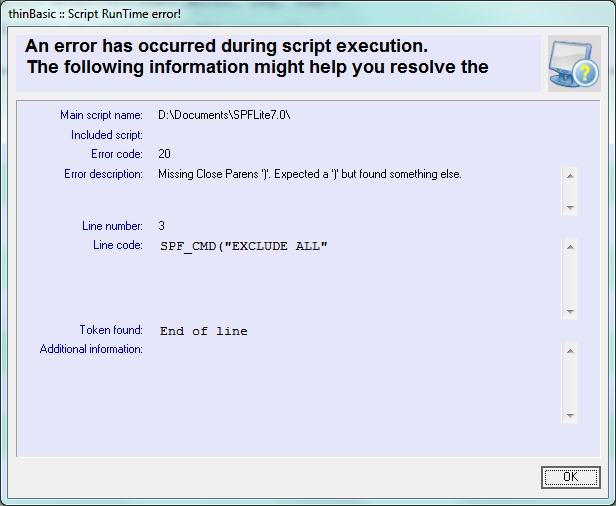

Debugging your Macro
Contents of Article
Tracking your macro's flow of control
Just as with any programming exercise, your macro may not to do just what you want on the first attempt.
So, what types of errors are you likely to see? Simple syntax errors are usually the simplest to correct.
thinBasic provides you with a detailed error display like this:

This message tells you what thinBasic expected to find - a closing parenthesis - and what it found instead - an End of line.
Once you add a closing ) to line 3 this problem is fixed.
However, there are some errors that thinBasic detects that result in misleading and confusing messages:
- Duplicating reserved words as variable names can trigger strange errors. If the error is reported immediately following a DIM statement that declared variables, review the variable names you have used.
- Delimiter parsing errors (expecting a closing parenthesis and not finding it) will sometimes describe the 'found' tag as some value from the previous valid statement.
- Other missing syntax, like a missing close-quote, will cause similar confusing messages
These can be frustrating, but the line number flagged as in error is usually where the problem line is, or is close to it.
The other error most commonly made is misspelling of function names, and a quick browse of the Help file should provide the correct spelling. An easy mistake to make is failing to put a $ for a string-based function like Mid$. If you do that, you'll get an error message about code that "seems" to be correct but isn't. Similar to misspelled names is failing to define a variable before you used it.
Tracking your macro's flow of control
A common debugging problem is code that does not follow the path you think it should. The macro may just end prematurely, or seems to be in an area of code that it should not be, and you have to figure out: How did the macro end up there?
The function SPF_Debug is useful in a variety of ways in solving such problems. It allows you to write messages to a debug log . These messages can be anything from simple 'breadcrumb' messages, like:
SPF_Debug("Starting line loop")
SPF_Debug("Parameters validated")
to displays of macro variables, which can be done like this:
SPF_Debug("Operand1=" + Operand1)
All of the SPFLite support functions will (in addition to the defined values returned by the functions) set a Return Code value and a Return Message value. You can get these values using the functions Get_RC and Get_Msg$.
Good programming practice suggests that after calling any function that indicates success or failure with a return code, the return code should be tested and acted on. In a perfect world that's a good idea, but in practice we usually only check a few of the results of function calls when it seems important. And, many of the SPFLite interface calls are simple information retrieval calls where the functions never (or hardly ever) fail, and checking a return code would be unnecessary.
In addition, using nested function calls, like Get_LPtr(Get_Arg$(1)) would be very burdensome if we had to break down each function call into single steps and add RC tests. But, when something is not working, and you suspect a failing function call, what option do we have, other than breaking things down into single-step code?
The answer is to activate function tracing using SPF_Trace, which is called as follows:
SPF_Trace( [ ON | OFF | ERROR ] )
If you insert an SPF_Trace(ON)call at the beginning of your macro code (after the macro prototype line) the macro processor will create a debug log window, and write a trace line for every SPFLite interface function call. It will show the function call and its calling parameters, along with the resultant Return code and Error message text generated.
Lets look at an example. Given the following macro:
' Try.MACRO aaa bbb ccc ddd eee fff ggg hhh
SPF_Debug("Args: " + Get_Arg$(4, 2))
halt
The macro writer tried to display some of the calling arguments using an SPF_Debug display function. But when it was run, all that displays is "Args:" and nothing else. Obviously, it seems like Get_Arg$ is not working, but why? And how can we be be sure?
We could track this down the down the "hard way" with a brute-force approach, and break the macro down to individual statements, adding code to fetch and display error messages and return codes at every point - but that would be a lot of work. Instead, let's try using SPF_Trace and see how it can help. We add the SPF_Trace activation call, and the macro now looks like this:
' Try.MACRO aaa bbb ccc ddd eee fff ggg hhh
SPF_Trace(ON)
SPF_Debug("Args: " + Get_Arg$(4, 2))
halt
When run, the trace output looks like:
Get_Arg$(4, 2) RC=8 Invalid ARG indexes
Args:
SPF_Debug(Args: ) RC=0
There in the first line is our problem. The Get_Arg$ is failing. Now we need to determine why. (By the way, the actual log won't highlight the display in yellow like this. We just added the color in the documentation here to make it stand out.) Reviewing the documentation for the Get_Arg$ function reveals the problem. The two arguments are reversed; we needed to say (2, 4) and not the other way around.
Moral of the story: You have to read the manual.
What are the other two lines?
The Args: line is the output from the SPF_Debug() function, Debug and Trace share the same debugging window.
The last line is the trace output for the execution of the SPF_Debug()showing that it worked correctly (RC=0).
The Trace function can be turned ON and OFF selectively throughout your macro, which is handy when you can isolate the problem area to one section. If you don't need to trace an entire macro's execution, it will make the debugging output smaller, which makes it easier to follow.
The ERROR option requests that trace records need only be displayed when a function's return code is non-zero. This can reduce the volume of output down considerably, by turning the debugging output into "exception reporting", since it's usually more important to know when functions failed than when they succeeded.
Between SPF_Trace and SPF_Debug, it usually becomes simple to nail down the cause of most bugs.
If you wish, you can use thinBasic's output facilities to write debugging logs or any other information you wish. To do this, you must have the CONSOLE thinBasic module available at runtime.
You should place a statement of the form,
USES "CONSOLE"
prior to writing to the thinBasic console screen.
The "print" statements are slightly different than other versions of Basic you may know. They do not use semi-colons to influence the formatting of the output.
The PRINT statement will output one or more (comma-separated) items, but will not write an end-of-line termination (no Carriage Return and Line Feed).
The PRINTL statement ("print line") will output one or more (comma-separated) items, and will write an end-of-line termination.
You may also issue a CLS statement to clear the screen.
There are additional Console capabilities which you may find useful. See the thinBasic documentation under thinBasic Modules - Console for more information.
If you read the thinBasic documentation, you will notice in the Modules section they mention a Trace module, which for stand-alone thinBasic use provides a single-step debugging mode.
Unfortunately, the Trace module cannot be used presently in SPFLite Macro mode. If you attempt to use this, crashes will occur. When this problem is resolved and thinBasic Trace functions correctly, we will announce its availability.
Created with the Personal Edition of HelpNDoc: Create iPhone web-based documentation